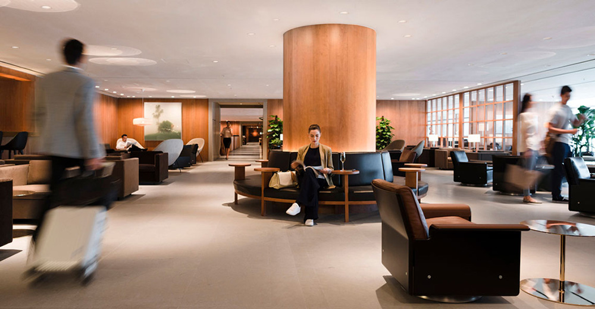
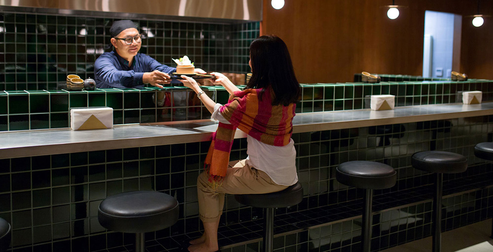
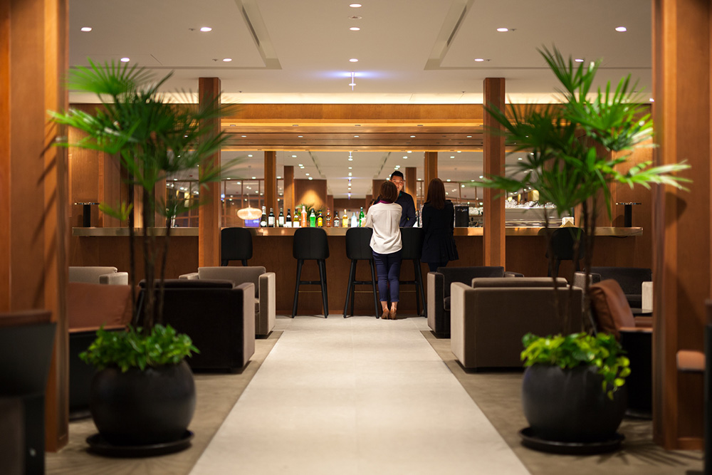

香港機場/環球貴賓室
用心自在 如家的設計
如同家一般的設計，用心在每一個細節上。機場貴賓室能夠提供乘客休憩、用餐與私密的空間，是忙碌而緊湊的飛航行程中，放鬆身心的好起點。

如果你曾經飛行6個小時以上，或是穿梭在不同城市間的旅行，就會深深了解，在機場等候啟程前，若能夠走進氣氛溫馨、空間舒適的貴賓室，讓你有賓至如歸，如家一般的感覺，會是多麼棒的一件事！
英國名設計師Ilse Crawford操刀 打造完美貴賓室空間
貴賓室對許多旅客來說，不只是身份尊榮的象徵，更是旅途中休憩沉澱，重新整理自己的節點。走進機場貴賓室，看見職員的親切笑容，一切都是那麼熟悉，彷彿回到家中一樣地輕鬆自在，這是全球國泰航空貴賓室予人一致的稱心體驗。
國泰航空近年陸續在香港國際機場、曼谷、羽田（東京）、馬尼拉、台北、溫哥華及倫敦希斯洛機場推出全新的機場貴賓室，以嶄新的面貌展示國泰航空「翺翔人生」的品牌理念。這一系列機場貴賓室的設計，全出自英國著名室內設計師Ilse Crawford所領導的倫敦工作室Studioilse之手，展現現代時尚的設計風格。
桃園機場第一航廈離境大廳的貴賓室在2015年啟用，也是沿用東京羽田機場、馬尼拉及曼谷國際機場貴賓室的一貫設計，佔地約1,253平方米，空間比以往更寬敞，增加約一百多座位，可容納約245人。
貴賓室的空間設計，採用桃木牆壁與岩石地板，風格相當雅致。備受旅客喜愛的「風味坊」（Noodle Bar）以玻璃屏幕和翠綠瓷磚裝飾，大門入口和酒吧均擺設青銅及黃銅裝飾品，彰顯時尚品味。貴賓室內有大量綠色植栽，空間感相當柔和，並陳設具有本地文化色彩的台灣藝術品。
為了營造家的感覺，燈光與照明系統皆經名家設計，確保其實用性和舒適性。傢俱也都經過精心挑選，例如為乘客提供額外私人空間的Solo Chair，寬敞的座椅兩旁設有高椅背，可以舒適地躺臥閱讀或休憩。每張座椅附設茶几、閱讀燈及衣帽掛鉤，方便乘客使用或用餐。貴賓室設有五個配備iMacs及列印機的個人工作間，亦提供免費無線上網服務。

餐點服務引人入勝 空間設計匠心獨運
國泰航空桃園機場貴賓室的「風味坊」提供多款台灣風味的菜餚，是國際旅客一嚐台灣美食的好地方。旅客起飛前可以享受熱騰騰的餛飩麵、擔擔麵及道地台灣牛肉麵，以及家常美食肉燥飯及珍珠奶茶。「嚐味坊」提供一口即食的輕食，系列餐前小點、起司、沙拉、鮮果和甜品，任君挑選。「悠然吧」則備有新鮮調製的雞尾酒，以及各種不含酒精的飲料。
香港機場「玉衡堂」貴賓室把香港街頭的「快」、「慢」線概念帶到貴賓室的設計裡。快線備有自助餐吧供應冷盤熱食，以熱帶植物塑造出活力空間，還有特色獨具的咖啡餐車，設計概念源自亞洲街頭的流動餐車，供應由專業咖啡師新鮮沖製的各種咖啡。慢線設有大量倚窗座椅供乘客休息，為乘客提供可遠眺跑道的舒適空間。「玉衡堂」貴賓室也提供「恬靜間」及十四個「淋浴間」，供旅客放鬆身心，洗滌疲憊。
以「翺翔人生」作為品牌出發點，國泰航空將品牌精神落實在機場貴賓室，致力為忙碌的飛行乘客提供輕鬆寫意休憩環境。在短暫休息充電後，可以活力地展開下一段旅程。